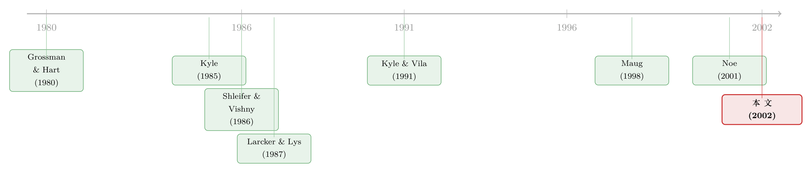

套利者唯一的「内幕」，是他知道自己买了
本文读的是 Cornelli & Li (2002, Review of Financial Studies)：收购公告之后蜂拥而入的并购套利者，常被认为「掌握了收购能否成功的内幕」。这篇论文给出一个反直觉的解释——套利者不需要任何关于收购前景的私有信息，他的信息优势是内生地长出来的：因为套利者更愿意把股票交出去，他的买入本身就抬高了收购成功的概率，于是「我自己买了」这件事，对股票的价值就成了一条真正的好消息。
1 一个被讲滥了的故事，和一个没被问清的问题
只要一家公司宣布被收购，剧本几乎都一样：成交量瞬间炸开，股价从公告前的水平一路窜高，一群叫「并购套利者（risk arbitrageur）」的人涌进来，买入目标公司的股票、做空收购方的股票，赌这桩收购最终能成。文献里说，套利圈子常常合计控制了目标股票的 30–40%，于是他们成了「收购能不能成功」这件事上最举足轻重的一股力量；也正因为他们更愿意把股票交出去，市场普遍把他们看成「站在收购方那一边」的人（见 Welles (1981)、Grinblatt and Titman (1998)）。
到这里都还是常识。真正让人含糊过去的，是下面这个问题：套利者凭什么能赚钱？
最流行的答案是「信息」——他们比市场更清楚某桩收购到底有几分胜算。Larcker and Lys (1987) 那篇经典的实证研究就是这么假设的：套利者更懂行，他们买入的那些收购案，实际成功率比市场价格隐含的平均成功概率要高，于是他们在组合上赚到了可观的正收益。
听上去顺理成章。但 Cornelli 和 Li 偏偏不接受这个前提。他们的问题尖锐得多：凭什么假设套利者天生就知道哪桩收购更可能成？ 套利者自己接受访谈时反复说，他们工作里最关键的一环，是猜别的套利者会怎么做——这听起来根本不像「我手里攥着一份关于公司基本面的独家情报」，倒更像一场「我猜你猜我猜」的博弈。
于是这篇论文要讲的核心，可以浓缩成一句话：
套利者的信息优势，不必从天而降，而可以从他自己的入场决定里内生地长出来——如果套利者的出现会抬高收购成功的概率，那么「有一个套利者买了股票」这件事本身，就提高了股票的价值；而那个买了股票的套利者，知道自己买了。
这是一句几乎是同义反复、却暗藏机锋的话。下面我们一步步把它讲透。
2 先把舞台搭起来：搭便车问题与「临时大股东」
故事的起点，是公司金融里那个著名的难题——Grossman and Hart (1980) 的搭便车问题（free-rider problem）。
设想一家股权高度分散、没有任何大股东的公司。收购方出价 P_T 来要约收购，承诺只要超过 50% 的股份被交出（tender），他就以 P_T 买下所有交出的股份，并把公司的每股价值提升 ΔP。问题在于：一个原子化的小股东会怎么想？他持股太少，自己交不交根本不影响结果。若收购成功，留在手里的股票每股就值 P_0 + ΔP；那他凭什么要以更低的 P_T 把股票交出去？于是人人都想「搭便车」——都想留着股票享受升值，谁都不肯出让。结果就是：哪怕这桩收购对所有人都有好处，它成功的概率也严格小于 1。
套利者恰好补上了这块拼图。与原子化的小股东不同，套利者会买入一个非平凡的份额 λ，摇身一变成为临时的大股东（temporary large shareholder）。一旦成了大股东，他的算盘就变了：如果交出去的股份不够、收购失败，股价跌回 P_0，他手里那一大笔股票就要亏。所以他愿意交出恰好够用的那部分——让收购能成——剩下的留着吃 ΔP 的升值。搭便车问题，就这样被「临时大股东」部分地化解了。
这正是本文与大股东治理文献的接口：Shleifer and Vishny (1986)、Hirshleifer and Titman (1990) 早就指出大股东能缓解搭便车；本文的新意在于——哪怕要约发生时根本没有大股东，也存在一类均衡，套利者会主动入场、买成大股东。
3 模型：把「内生的信息优势」一步步算出来
这是一篇彻头彻尾的理论论文，作者用倒推法（逆向归纳）求解一个完美贝叶斯均衡。我们沿着时间轴把关键步骤拆开。
时间线。 t=0 收购方宣布现金要约 P_T；可观测的还有公告前股价 P_0 与每股价值改善 ΔP，且自然地满足
$$P_0 + \Delta P \ge P_T \ge P_0 .$$
t=1 套利者决定是否入场（每人付成本 c）；t=2 交易发生，套利者藏身于噪声交易者之中建仓；t=3 套利者亮明持仓，所有人决定交出多少股份，收购成败揭晓。若收购失败，股价回到 P_0。
噪声与总成交量。 噪声交易者的成交量 μ 在 [0,1] 上均匀分布，与价格、与套利者需求都独立。设有 n 个套利者入场、每人买 λ，则总成交量为
$$y = \mu + \sum_{i=1}^{n}\lambda_i .$$
关键就在这里：n 谁都看不见，但所有人都能看见 y。小股东只能从 y 去反推到底有几个套利者进来了。
3.1 交出环节：Proposition 1
先看 t=3 的交出博弈。由 Grossman–Hart 的逻辑，小股东永远不交（他们把成功概率视作给定）。于是博弈只在套利者之间进行。若套利者手里合计不到 50%（即 Σλ_i < 0.5），收购注定失败，怎么交都无所谓；若 Σλ_i ≥ 0.5，均衡里套利者恰好交出 50% 的股份——多交一股都是把本可享受升值的股票贱卖。论文给出的唯一对称均衡是：
$$\gamma(\lambda_1,\dots,\lambda_n)=\frac{0.5}{\sum_{i=1}^{n}\lambda_i}, \qquad \gamma(n,\lambda)=\frac{0.5}{n\lambda}.$$
直觉很干净：入场的套利者越多（或每人持股越多），为了凑够那 50%，每个人需要贡献的比例就越小。γ 同时对 n 和 λ 递减。
3.2 一个套利者的例子：信息租金从哪里来
为了把直觉讲透，作者先做了一个只有一个套利者的简化版（这一版里套利者是垄断者、不是价格接受者，且可买一大笔 λ > 1/2）。交易按 Kyle (1989) 的方式进行：套利者和一个流动性交易者一起下单，做市商只看到总订单流、看不到是谁下的，然后把价格定在「给定订单流下一股的期望价值」。
为简化，噪声交易者等概率买 0 或 λ 股，套利者以概率 q 买 λ 股。于是订单流只有三种：
- 订单流 =
0：套利者显然没买，做市商定价P_0，收购失败； - 订单流 =
λ：可能是套利者买了（成功，概率q），也可能是噪声交易者买了（失败，概率1−q），做市商定价P_0 + qΔP； - 订单流 =
2λ：套利者一定买了，定价P_0 + ΔP，收购成功。
套利者真的买入时，订单流要么是 λ、要么是 2λ，各占一半。所以他预期每股付出的价格是
$$P_1=\tfrac12\,(P_0+q\Delta P)+\tfrac12\,(P_0+\Delta P)=P_0+\Delta P\,\frac{1+q}{2}.$$
注意 P_1 < P_0 + ΔP：因为他成功地藏在了噪声里，做市商无法确认是他在买，于是他买得比「完全暴露」时更便宜。这个价格的缺口，就是他的信息租金。买入 λ 股、并最优地只交出 1/2 股之后，他的期望利润为：
接下来是收购方的问题。收购以概率 q*(P_T) 成功，成功时收购方以 P_T 买下 1/2 股。把套利者的最优 q 与收购方的最优出价一起解出来，得到一组漂亮的闭式解：
$$q^{*}=\tfrac14,\qquad P_T^{*}=P_0+\Big(1-\tfrac{\lambda}{2}\Big)\Delta P,\qquad \Pi=\frac{\lambda\,\Delta P}{8}>0 .$$
三件事值得记住：其一，套利者的均衡利润 λΔP/8 严格为正——他什么基本面内幕都没有，照样赚到了钱，赚的全是「藏身噪声」的信息租金；其二，套利者能买的越多（λ 越大），收购方的出价 P_T* 反而越低——既然有人愿意大笔接盘，要约价就不必抬那么高去讨好他；其三，这个套利者唯一比别人多知道的，就是他确实买了。
3.3 反转：多个套利者，与「越多对手、出价越高」
但一个没有任何先天优势的人都能稳赚，别人当然会跟进。于是必须追问：当多个套利者可以同时入场，租金会不会被竞争掉？
论文给出的一般模型里有 N 个套利者、彼此是价格接受者、完全竞争。结论是：存在对称均衡，每个套利者在「进」与「不进」之间随机化，而收购以正概率成功。只要预期利润严格为正，就会有更多人想进；可一旦进来的人太多，成交量 y、进而价格都被推得太高，利润被抹平——入场决策的混合策略恰好把利润压到「扣掉成本 c 后」的零点。
更有意思的是单一套利者面对多桩收购（t 桩）的情形。把投资某一桩的机会成本内生为「放弃别的收购的利润」之后，对称均衡里每桩的成功概率是 q* = 1/t，而均衡出价为
$$P_T^{*}=P_0+\Delta P-\frac{2\lambda\,\Delta P}{t-1}.$$
当收购活动升温（t 变大），收购方之间的竞争加剧、出价被抬高，套利者的利润上升、收购方的利润下降；极限上 t → ∞ 时 P_T → P_0 + ΔP，收购方利润归零、套利者拿走全部剩余。这是一条很反直觉的比较静态：你以为「同时有更多买卖机会」会摊薄某一桩的吸引力，模型却说——正因为套利者更难被「拴」在某一桩上，收购方反而得出更高的价去请他来。
4 模型能解释什么：四条可检验的经验含义
把镜头从公式拉回现实，这个「内生信息」的框架顺手解释了几条收购期间的典型现象，也给出了可检验的预测：
- 成交量与成功概率正相关——套利者进得越多，成交量越大、成功概率越高，于是成交量与股价也正相关。这与一个被反复观察到的现象吻合：收购公告后，目标股票的价格与成交量相对公告前都暴涨。Jensen and Ruback (1983) 在综述里发现目标公司股价的平均跳升在
17%–35%之间，Bradley, Desai, and Kim (1988) 对 1980 年代并购潮的发现也类似。 - 机会成本上升时（比如可投的替代收购变多），预期投入某一桩的套利者数量减少，但投这一桩的套利者利润上升、收购方提供的溢价也上升。
- 目标股票越流动，套利者越能把交易藏好，因而其在该桩里的存在感更大、回报更高；又因为不必费力去「请」他来，收购方提供的溢价反而下降。这把「流动性」放进了收购溢价的决定因素里，是相当锋利的一条预测。
- 由此也回到了开头：套利者「站在收购方一边」并非因为他们偏心，而是因为均衡里他们更愿意交出股票、从而抬高成功率。
注意第 2 条与 Larcker and Lys (1987) 的实证并不矛盾，但机制完全不同。Larcker–Lys 说套利者买的案子成功率更高，是因为他们「事前更懂行」；本文说同样的相关可以来自一个反向的因果——套利者事前未必知道哪桩更可能成，但他们的进场本身抬高了成功率。同一组数据，两套故事。
5 文献脉络：从「搭便车」到「内生的信息」
把这篇论文放回它生长的那条藤蔓上，会看得更清楚。
源头是 Grossman and Hart (1980) 的搭便车问题：分散的小股东各自留着股票等升值，使有益的收购也可能失败。紧接着，一个自然的问题是：谁能打破这个僵局？Shleifer and Vishny (1986)、Hirshleifer and Titman (1990) 给出的答案是大股东——有人持股足够多，就有动机促成收购。
然后，交易微观结构这一支登场。Kyle (1985, 1989) 的框架告诉我们：知情者如何藏身于噪声交易者、把私有信息一点点渗进价格。Kyle and Vila (1991) 把它直接搬进收购——一个收购方在公告前悄悄买股，靠噪声交易部分地掩护自己的存在。
但真正关键的一步，是本文挪动了「信息」的位置。在 Kyle–Vila 里，知情者事前就握有私有信息；而 Cornelli–Li 让套利者事前一无所知，信息优势是他入场买入之后才内生出来的——「我知道我买了」。这与股东积极主义文献（Kahn and Winton (1998)、Maug (1998)）一脉相承：那里的大股东通过监督来改变公司价值，投资者靠「我打算干预」来获利；Noe (2001) 进一步处理了多个这样的投资者。本文把这套逻辑搬到了收购战场上，且要额外证明：多个拥有同样优势的套利者，不会把彼此的租金竞争干净。

这条脉络的尽头，还连着 Shleifer and Vishny (1997) 的有限套利（limits of arbitrage）——套利者的资金不是无限的，机会成本（本文里的 c）是真实的约束。关于「无风险的钱为什么没人捡」，在并购套利这个具体战场上的实证刻画，可参见《无风险的钱没人捡，因为捡钱的人手太短——并购套利里的「有限套利」》；而套利者「做空潜力」如何反过来影响收购本身，则可对照《想躲开套利者的「做空」，就用现金买下它》。
6 评论与延伸（Q&A + 研究方向）
(a) 几个可能的疑问
Q：所谓「内生的信息优势」，到底比「外生地更懂行」强在哪？
强在它不需要一个无法检验的假设。传统故事必须先假定套利者「天生信息更灵」，可这恰恰是最难验证、也最像循环论证的地方。本文把这个假设拿掉，只保留一个机制上的事实——套利者更愿意交出股票、从而抬高成功率——信息优势就自动浮现：他唯一确知的私有信息，就是「我自己买了
λ」。这是一个更弱、因而更可信的前提。
Q：套利者和小股东都是风险中性、都看得到成交量，凭什么套利者就有优势？
区别不在风险偏好（本文特意假设双方都风险中性，以排除这条解释），而在信息集。小股东只看到总成交量
y；买了股票的套利者除了看到y，还知道自己贡献了λ，因而能更准地反推y = μ + Σλ_i里其他人的需求、进而更准地估计成功概率。同样一个y，在「我买了」的条件下，隐含的成功概率更高。
Q：为什么套利者会交出股票，小股东却死活不交？
因为体量不同。小股东是原子化的，交不交都不改变结果，于是按 Grossman–Hart 选择搭便车、绝不低价出让；套利者持有非平凡的
λ，他清楚若大家都不交、收购失败，自己那一大笔就要亏回P_0。所以他愿意交出恰好够数的 50%，把剩下的留着吃ΔP。是「大」逼着他合作。
Q：那么多套利者都想赚这份钱，租金为什么没被竞争掉？
关键在于入场是混合策略。只要预期利润为正就有人想进，但人一多，成交量和价格被推高，利润下降——均衡里每个套利者随机化地进或不进，恰好把（扣除成本
c后的）预期利润压到零，而收购仍以正概率成功。租金没有消失，是被「成本c」和「拥挤」一起吃掉的。
Q：「目标越流动、收购溢价越低」这条预测，是不是有点反直觉？
表面上反直觉，逻辑却自洽：流动性高，套利者更容易把交易藏进噪声里、信息租金更厚，于是更愿意主动进场。既然收购方不必费力抬价去「请」套利者来，均衡溢价反而下降。流动性把租金从收购方手里转移给了套利者。这也给「流动性—收购溢价」提供了一个干净的可检验假设。
Q：模型里套利者不做空目标股，这现实吗？
不完全现实——现实中套利者通常做空收购方股票来对冲。但本文里套利者风险中性，没有对冲的动机，所以假设不能做空目标股（且持股上限
λ̄对应 5% 的强制披露线，即美国 Section 13D）。作者在结论里坦承，若引入做空目标股的其他理由，结论需要再讨论。这是模型的边界，而非硬伤。
(b) 几个可能的研究问题与提案
1. 把「内生信息」搬到公司债的要约收购 / 交换要约里。
【经济故事】债券的要约收购（tender offer）、债务交换（exchange offer）同样有搭便车与「凑够最低接受比例」的结构，且债券持有人里同样活跃着事件驱动型的套利资金。本文的机制——买入本身抬高成功率、「我买了」成为内生好消息——在债市可能更强，因为债券更不流动、藏身空间更大。 【可行性】中。需要 TRACE 级别的逐笔成交数据 + 债务重组/交换要约的事件样本，识别上可用「最低接受门槛附近」的不连续性。难点是债券持有人集中度与匿名度的度量。
2. 用并购套利基金的持仓，检验「机会成本上升 → 单桩溢价上升」。
【经济故事】本文预测，当可投的替代收购变多（机会成本
c上升），投入某一桩的套利者减少、但该桩溢价上升。这是一条干净、可证伪的横截面预测。 【可行性】高。13F + 事件驱动基金持仓 + SDC 并购库可拼出「同期在跑的 deal 数量」作为机会成本代理，用 deal 固定效应回归溢价。识别担忧是机会成本与 deal 质量内生相关，需要外生的「同期 deal 供给」冲击。
3. 把「流动性 → 溢价下降」做成因果。
【经济故事】模型的锋利预测是：目标股票越流动，套利者租金越厚、越愿进场，收购方溢价越低。 【可行性】中。可借 tick size、做市制度改革（如 decimalization、试点项目）这类外生的流动性冲击做双重差分 (difference-in-differences, DiD)，比较冲击前后被收购公司的溢价。难点是被收购是内生选择，样本选择需要谨慎处理。
4. 检验「成交量 → 成功概率」的因果方向。
【经济故事】本文与 Larcker–Lys 给出同一相关的两套因果。能否把「套利者抬高了成功率」从「套利者预见了成功」里分离出来？ 【可行性】低到中。需要一个只影响套利者进场、不影响 deal 基本面的工具变量（如套利资金的总体流动性、其他不相关 deal 带来的资金占用）。诚实地说，找到满足排他性约束的工具很难，但这正是这条文献最值得攻克的识别难题。
7 我的判断
这篇论文的贡献，在于用一个极简的机制替换掉了一个昂贵的假设。整支并购套利文献长期默认套利者「信息更灵」，而这个假设既难检验又近乎循环；Cornelli 和 Li 证明，哪怕套利者对收购前景一无所知，只要「他更愿意交出股票」这件事成立，信息优势就会从他自己的入场决定里内生地长出来。这是一个理论上的「祛魅」——它告诉我们，要解释套利者赚钱、要约后量价齐升、套利者「偏向收购方」这些现象，不需要请出「内幕」这个幽灵。同时它把 Grossman–Hart 的搭便车问题、Kyle 的交易微观结构、与大股东治理三条线索拧在了一起，闭式解干净漂亮。
对它的担忧主要有三点。其一，这是纯理论，全部「量级」都来自模型内部（q*=1/4、Π=λΔP/8、P_T* 的闭式解），论文没有自己的数据来直接检验那几条经验含义——尤其是最锋利的「流动性 → 溢价下降」，至今仍缺乏干净的因果证据。其二，风险中性、不能做空目标股、噪声交易量均匀分布在 [0,1] 这些假设都相当强，放松其中任何一条（比如允许对冲、引入风险厌恶）结论是否稳健，并不显然。其三，多重均衡的问题被对称性假设压了下去，现实里套利者之间「我猜你猜」的协调失败，恰恰可能是收购失败的重要来源，而模型把这一块用「亮明持仓」的假设给抹平了。
接下来我最想看到的，是有人把这套机制拿到数据里对质：用一个只影响套利者进场、不触动 deal 基本面的外生冲击（流动性改革、资金占用、不相关 deal 的供给），去分离「套利者抬高了成功率」与「套利者预见了成功」这两套因果。这不仅能检验本文，也能给「有限套利」在并购战场上的真实边界，标出一个更可信的刻度。
参考文献
Bradley, M., A. Desai, and H. Kim (1988). Synergistic Gains from Corporate Acquisitions and Their Division Between Stockholders of Target and Acquiring Firms. Journal of Financial Economics 21, 3–40.
Cornelli, F., and D. Li (2002). Risk Arbitrage in Takeovers. Review of Financial Studies 15(3), 837–868.
Grossman, S., and O. Hart (1980). Takeover Bids, the Free-Rider Problem, and the Theory of the Corporation. Bell Journal of Economics 11, 42–64.
Hirshleifer, D., and S. Titman (1990). Share Tendering Strategies and the Success of Hostile Takeover Bids. Journal of Political Economy 98, 295–324.
Jensen, M., and R. Ruback (1983). The Market for Corporate Control—The Scientific Evidence. Journal of Financial Economics 11, 5–50.
Kahn, C., and A. Winton (1998). Ownership Structure, Speculation, and Shareholder Intervention. Journal of Finance 53, 99–129.
Kyle, A. (1985). Continuous Auctions and Insider Trading. Econometrica 53, 1315–1355.
Kyle, A. (1989). Informed Speculation with Imperfect Competition. Review of Economic Studies 56, 317–356.
Kyle, A., and J. Vila (1991). Noise Trading and Takeovers. RAND Journal of Economics 22, 54–71.
Larcker, D., and T. Lys (1987). An Empirical Analysis of the Incentives to Engage in Costly Information Acquisition: The Case of Risk Arbitrage. Journal of Financial Economics 18, 111–126.
Maug, E. (1998). Large Shareholders as Monitors: Is There a Trade-Off Between Liquidity and Control? Journal of Finance 53, 65–98.
Noe, T. (2001). Investor Activism and Financial Market Structure. Review of Financial Studies 15, 289–318.
Shleifer, A., and R. Vishny (1986). Large Shareholders and Corporate Control. Journal of Political Economy 94, 461–488.
Shleifer, A., and R. Vishny (1997). The Limits of Arbitrage. Journal of Finance 52, 35–55.
Welles, C. (1981). Inside the Arbitrage Game. Institutional Investor (August), 41–58.